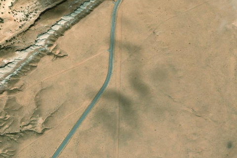

Temple Mountain
TEMPLEMOUNTAIN · UT

Aerial imagery source: Esri, Vantor, Earthstar Geographics, and the GIS User Community
| Identifier | TEMPLEMOUNTAIN |
|---|---|
| State | UT |
| Runway length | 3,500 ft |
| Runway width | 30 ft |
| Surface | Dirt, brush |
| Runway | 18/36 |
| Elevation | 5,295 ft |
| Ownership | goblin valley state park |
| CTAF | 122.9 |
| Coordinates | 38.6485, -110.6578 |
Notes
[ubcp] Temple Mountain NOTE: The Temple Mountain Airstrip is now located on State Parks land, specifically an extension of the Goblin Valley State Park. State Parks has allowed us to continue to use the airstrip while the UBCP, State Aeronautics, and State Parks work together on developing a plan for continued access of the airstrip. Please be courteous to any Park Officials that may ask you a few questions when operating in and out of Temple Mountain. And as always, thanks for your exemplary stewardship while we work for establishing the first official airstrip within State Parks land. Description: Temple Mountain is a north/south oriented with sporadic clump grass, small bushes and ant hills. The surface is typical Utah desert, slightly soft with some give that can add to takeoff rolls. Runway: 2,600' long x 40’. The surface is a little soft but is easily managed with 850 tires or larger and is relatively smooth. Slopes to the north 0.38%. Approximately 500’ from the south end there is a small undulation. Land beyond it. Approach Considerations: The airstrip can be approached from either direction. When landing to the north, use caution for a small undulation approximately 500’ from the south end. Recommend landing beyond it. Amenities: Primitive camping areas are available along the airstrip. BLM campgrounds are nearby. Goblin Valley State Park is 5 miles to the south. Trailheads to Wild Horse Canyon and Wild Horse Window hikes are located across the highway. The Temple Mountain mining site is nearby as well. Windsock: No.